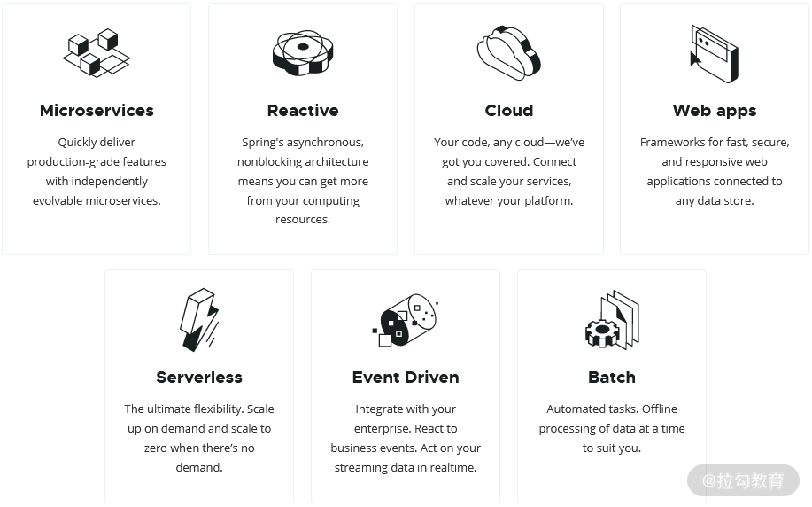
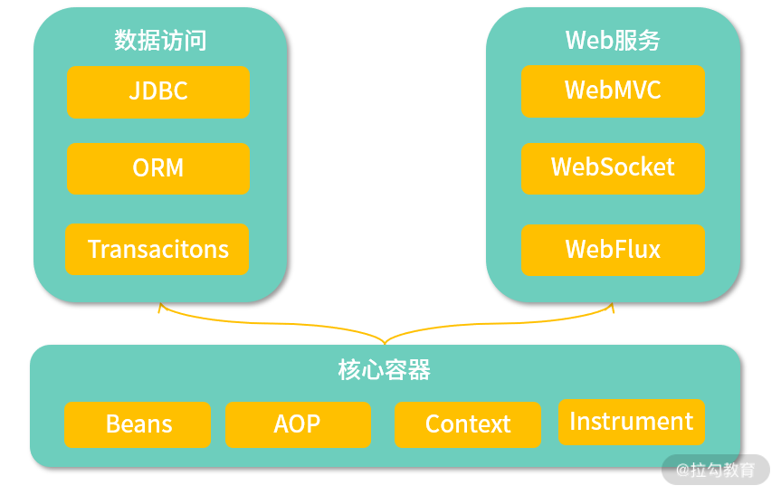
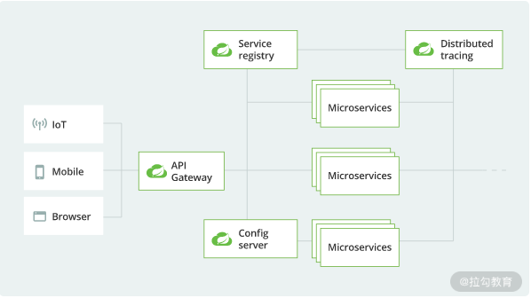
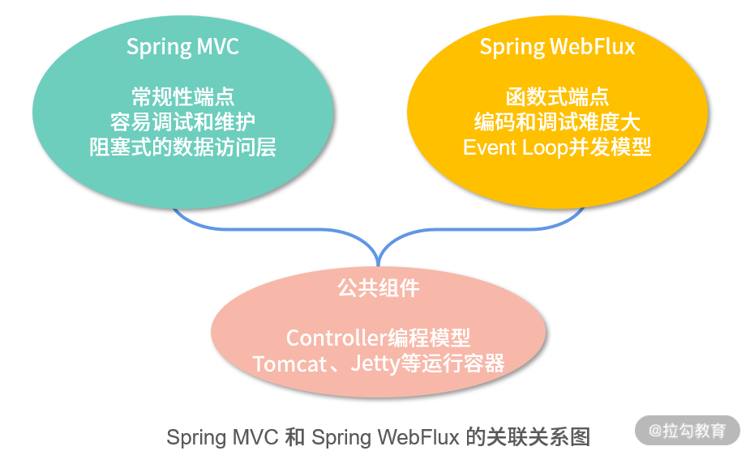

- 00 开篇词 从零开始：为什么要学习 Spring Boot？.md.html
- 01 家族生态：如何正确理解 Spring 家族的技术体系？.md.html
- 02 案例驱动：如何剖析一个 Spring Web 应用程序？.md.html
- 03 多维配置：如何使用 Spring Boot 中的配置体系？.md.html
- 04 定制配置：如何创建和管理自定义的配置信息？.md.html
- 05 自动配置：如何正确理解 Spring Boot 自动配置实现原理？.md.html
- 06 基础规范：如何理解 JDBC 关系型数据库访问规范？.md.html
- 07 数据访问：如何使用 JdbcTemplate 访问关系型数据库？.md.html
- 08 数据访问：如何剖析 JdbcTemplate 数据访问实现原理？.md.html
- 09 数据抽象：Spring Data 如何对数据访问过程进行统一抽象？.md.html
- 10 ORM 集成：如何使用 Spring Data JPA 访问关系型数据库？.md.html
- 11 服务发布：如何构建一个 RESTful 风格的 Web 服务？.md.html
- 12 服务调用：如何使用 RestTemplate 消费 RESTful 服务？.md.html
- 13 服务调用：如何正确理解 RestTemplate 远程调用实现原理？.md.html
- 14 消息驱动：如何使用 KafkaTemplate 集成 Kafka？.md.html
- 15 消息驱动：如何使用 JmsTemplate 集成 ActiveMQ？.md.html
- 16 消息驱动：如何使用 RabbitTemplate 集成 RabbitMQ？.md.html
- 17 安全架构：如何理解 Spring 安全体系的整体架构？.md.html
- 18 用户认证：如何基于 Spring Security 构建用户认证体系？.md.html
- 19 服务授权：如何基于 Spring Security 确保请求安全访问？.md.html
- 20 服务监控：如何使用 Actuator 组件实现系统监控？.md.html
- 21 指标定制：如何实现自定义度量指标和 Actuator 端点？.md.html
- 22 运行管理：如何使用 Admin Server 管理 Spring 应用程序？.md.html
- 23 数据测试：如何使用 Spring 测试数据访问层组件？.md.html
- 24 服务测试：如何使用 Spring 测试 Web 服务层组件？.md.html
- 结束语 以终为始：Spring Boot 总结和展望.md.html
- 捐赠
01 家族生态：如何正确理解 Spring 家族的技术体系？
Spring 框架自 2003 年由 Rod Johnson 设计并实现以来，经历了多个重大版本的发展和演进，已经形成了一个庞大的家族式技术生态圈。目前，Spring 已经是 Java EE 领域最流行的开发框架，在全球各大企业中都得到了广泛应用。
今天，我将通过一个课时的时间带领你梳理整个 Spring 家族中的技术体系，以及各种功能齐全的开发框架。让我们先来看一下 Spring 家族技术生态的全景图。
Spring 家族技术生态全景图
我们访问 Spring 的官方网站（https://spring.io/）来对这个框架做宏观的了解。在 Spring 的主页中，展示了下面这张图：

Spring 家族技术体系（来自 Spring 官网）
从图中可以看到，这里罗列了 Spring 框架的七大核心技术体系，分别是微服务架构、响应式编程、云原生、Web 应用、Serverless 架构、事件驱动以及批处理。
当然，这些技术体系各自独立但也有一定交集，例如微服务架构往往会与基于 Spring Cloud 的云原生技术结合在一起使用，而微服务架构的构建过程也需要依赖于能够提供 RESTful 风格的 Web 应用程序等。
另一方面，在具备特定的技术特点之外，这些技术体系也各有其应用场景。例如，如果我们想要实现日常报表等轻量级的批处理任务，而又不想引入 Hadoop 这套庞大的离线处理平台时，使用基于 Spring Batch 的批处理框架是一个不错的选择。再比方说，如果想要实现与 Kafka、RabbitMQ 等各种主流消息中间件之间的集成，但又希望开发人员不需要了解这些中间件在使用上的差别，那么使用基于 Spring Cloud Stream 的事件驱动架构是你的首选，因为这个框架对外提供了统一的 API，从而屏蔽了内部各个中间件在实现上的差异性。
我们无意对 Spring 中的所有七大技术体系做全面的展开。在日常开发过程中，如果构建单块 Web 服务，可以采用 Spring Boot。如果想要开发微服务架构，那么就需要使用基于 Spring Boot 的 Spring Cloud，而 Spring Cloud 同样内置了基于 Spring Cloud Stream 的事件驱动架构。同时，在这里我想特别强调的是响应式编程技术。响应式编程是 Spring 5 引入的最大创新，代表了一种系统架构设计和实现的技术方向。因此，今天我们也将从 Spring Boot、Spring Cloud 以及 Spring 响应式编程这三个技术体系进行切入，看看 Spring 具体能够为我们解决开发过程中的哪些问题。
当然，所有我们现在能看到的 Spring 家族技术体系都是在 Spring Framework 基础上逐步演进而来的。在介绍上述技术体系之前，我们先简单了解下 Spring Framework 的整体架构，如下图所示：

Spring Framework 整体架构图
Spring 从诞生之初就被认为是一种容器，上图中的“核心容器”部分就包含了一个容器所应该具备的核心功能，包括容器中基于依赖注入机制的 JavaBean 处理、面向切面 AOP、上下文 Context及 Spring 自身所提供的表达式工具等一些辅助功能。
图中最上面的两个框就是构建应用程序所需要的最核心的两大功能组件，也是我们日常开发中最常用的组件，即数据访问和 Web 服务。这两大部分功能组件中包含的内容非常多，而且充分体现了 Spring Framework 的集成性，也就是说，框架内部整合了业界主流的数据库驱动、消息中间件、ORM 框架等各种工具，开发人员可以根据需要灵活地替换和调整自己想要使用的工具。
从开发语言上讲，虽然 Spring 应用最广泛的是在 Java EE 领域，但在当前的版本中，也支持 Kotlin、Groovy 以及各种动态开发语言。
Spring Boot 与 Web 应用程序
Spring Boot 构建在 Spring Framework 基础之上，是新一代的 Web 应用程序开发框架。我们可以通过下面这张图来了解 Spring Boot 的全貌：

Spring Boot 整体架构图
通过浏览 Spring 的官方网站，我们可以看到 Spring Boot 已经成为 Spring 中顶级的子项目。自 2014 年 4 月发布 1.0.0 版本以来，Spring Boot 俨然已经发展为 Java EE 领域开发 Web 应用程序的首选框架。
让我们先来感受一下使用 Spring Boot 开发一个 RESTful风格 的 HTTP 端点所需要做的编码工作，如下所示：
@SpringBootApplication
@RestController
public class DemoApplication {
@GetMapping("/helloworld")
public String hello() {
return "Hello World!";
}
public static void main(String[] args) {
SpringApplication.run(DemoApplication.class, args);
}
}
这是一个经典的“Hello World”程序，而且使用 Spring Boot 来构建这样一个支持 RESTful 风格的 Web 应用程序只需要几秒钟。一旦创建了一个 Spring Boot 应用程序，并添加类似上面的 DemoApplication 类，我们就可以启动 Spring Boot 内置的 Web 服务器并监听 8080 端口，剩余的一切工作 Spring Boot 都帮你自动完成了，是不是很强大？Spring Boot 的强大之处还不止这一点，让我们一起看一下 Spring Boot 的核心功能。
通过前面的描述，我们已经发现 Spring Boot 具备了传统 Spring 框架所不具备的功能特性，即支持运行期内嵌容器（包含 Tomcat、Jetty 等支持 Servlet 规范的多款传统 Web 容器）。而在最新的 Spring Boot 2.X 版本中，还提供了对 Netty 以及集成 Servlet 3.1+ 的非阻塞式容器的支持。基于运行期内嵌容器机制，开发人员想要启动Web 服务只需要使用一行 java –jar 命令就可以了。
通过前面的代码示例，我们还发现 Spring Boot 的核心功能就是自动配置。在前面的示例中，我们可以看到 Spring Boot 并没有像以前使用 Spring MVC 一样需要指定一大堆关于 HTTP 请求和响应的 XML 配置。事实上，Spring Boot 的运行过程同样还是依赖于 Spring MVC，但是它把原本需要开发人员指定的各种配置项设置了默认值，并内置在了运行时环境中，例如默认的服务器端口就是 8080，如果我们不需要对这些配置项有定制化需求，就可以不做任何的处理，采用既定的开发约定即可。这就是 Spring Boot 所倡导的约定优于配置（Convention over Configuration）设计理念。
另外，相较传统的 Spring 框架，Spring Boot 的一大亮点是引入了内置的监控机制，这是通过 Actuator 组件（常见的包括内存信息、JVM 信息、垃圾回收信息等）来实现的。基于 Actuator 组件，一方面我们可以查看包含自动配置在内的应用程序详细信息，另一方面可以实时监控该应用程序的运行时健康状态。
可以看到，Spring Boot 的上述功能实际上从多个维度简化了 Web 应用程序的开关过程，这些维度包含编码、配置、部署和监控等。在 02 讲中，我们将通过一个具体的案例来对每个维度给出更为详细的描述。
Spring Cloud 与微服务架构
Spring Cloud 构建在 Spring Boot 基础之上，它的整体架构图如下所示：

Spring Cloud 与微服务整体架构图（来自 Spring 官网）
技术组件的完备性是 Spring Cloud 框架的主要优势，它集成了业界一大批知名的微服务开发组件。Spring Cloud 的核心组件如下图所示：

Spring Cloud 核心功能组件
可以看到，基于 Spring Boot 的开发便利性，Spring Cloud 巧妙地简化了微服务系统基础设施的开发过程，Spring Cloud 包含上图中所展示的服务发现注册、API 网关、配置中心、消息总线、负载均衡、熔断器、数据监控等。
Spring 5 与响应式编程
目前，Spring 已经演进到 5.X 版本。随着 Spring 5 的正式发布，我们迎来了响应式编程（Reactive Programming）的全新发展时期。Spring 5 中内嵌了与数据管理相关的响应式数据访问、与系统集成相关的响应式消息通信以及与 Web 服务相关的响应式 Web 框架等多种响应式组件，从而极大地简化了响应式应用程序的开发过程和开发难度。
下图展示了响应式编程的技术栈与传统的 Servlet 技术栈之间的对比：

响应式编程技术栈与 Servlet 技术栈之间的对比图（来自 Spring 官网）
从上图可以看到，上图左侧为基于 Spring WebFlux 的技术栈，右侧为基于 Spring MVC 的技术栈。我们知道传统的 Spring MVC 构建在 Java EE 的 Servlet 标准之上，该标准本身就是阻塞式和同步的，而 Spring WebFlux 基于响应式流，因此可以用来构建异步非阻塞的服务。
在 Spring 5 中，选取了 Project Reactor 作为响应式流的实现库。由于响应式编程的特性，Spring WebFlux 和 Project Reactor 的运行需要依赖于诸如 Netty 和 Undertow 等支持异步机制的容器。同时我们也可以选择使用较新版本的 Tomcat 和 Jetty 作为运行环境，因为它们支持异步 I/O 的 Servlet 3.1。下图更加明显地展示了 Spring MVC 和 Spring WebFlux 之间的区别和联系：

在基于 Spring Boot 以及 Spring Cloud 的应用程序中，Spring WebFlux 和 Spring MVC 可以混合进行使用。
讲完 Spring 家族的技术体系，让我们回到课程。在 01 讲中，我们主要围绕 Spring Boot 框架展开讨论，分别从配置体系、数据访问、Web 服务、消息通信、系统安全、系统监控、应用测试等维度对该框架进行深入的剖析，所采用的版本为 2.2.X 版。
小结与预告
本课时系统分析了 Spring 家族的技术生态，并重点介绍了 Spring Boot、Spring Cloud 和 Spring 响应式编程这三大技术体系。从技术演进的过程和趋势而言，这些工具和框架的出现有其必然性。Spring Boot 是对传统 Spring MVC 的改进，Spring Cloud 基于 Spring Boot 构建微服务架构，而响应式编程则代表未来技术的发展方向。
© 2019 - 2023 Liangliang Lee. Powered by gin and hexo-theme-book.